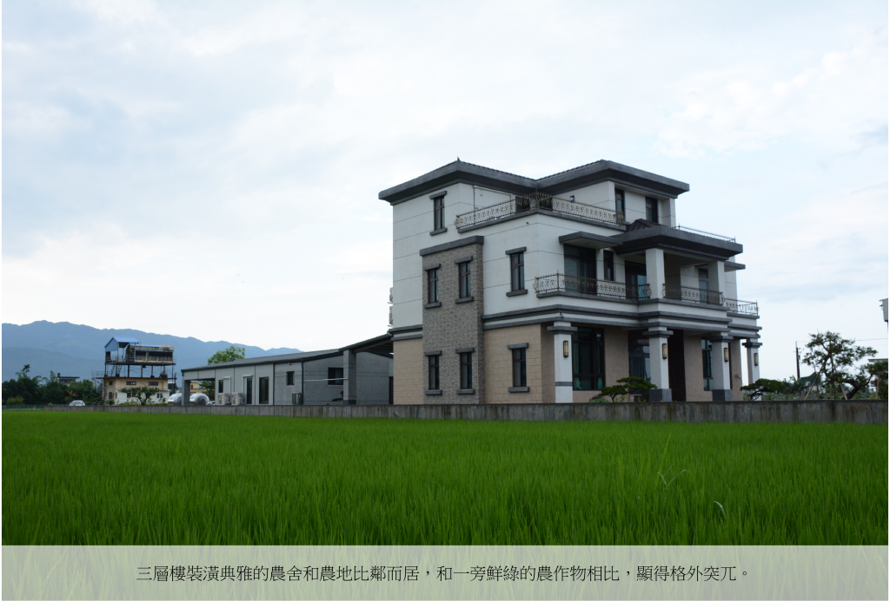
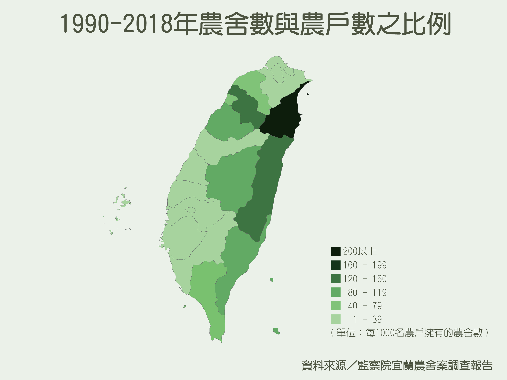
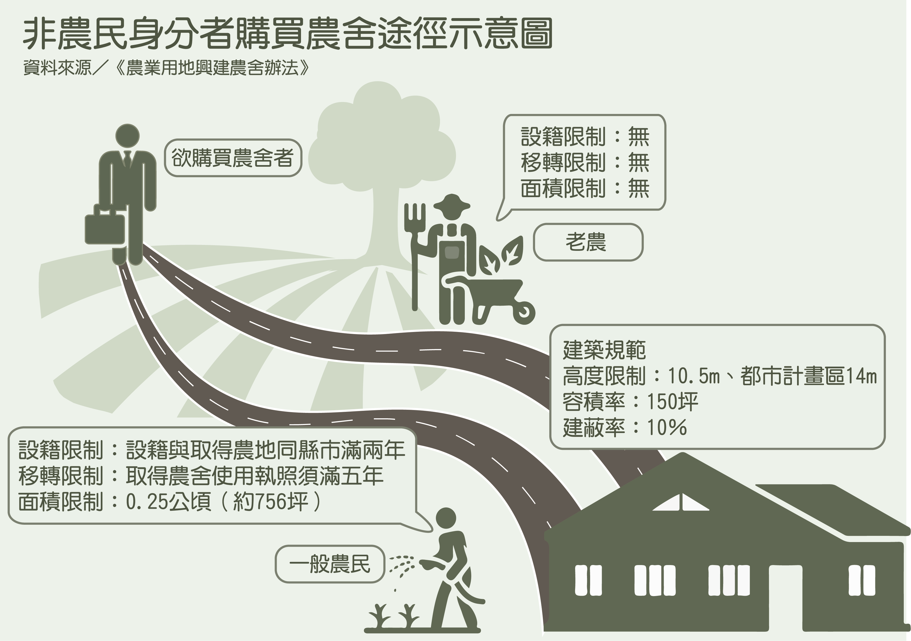
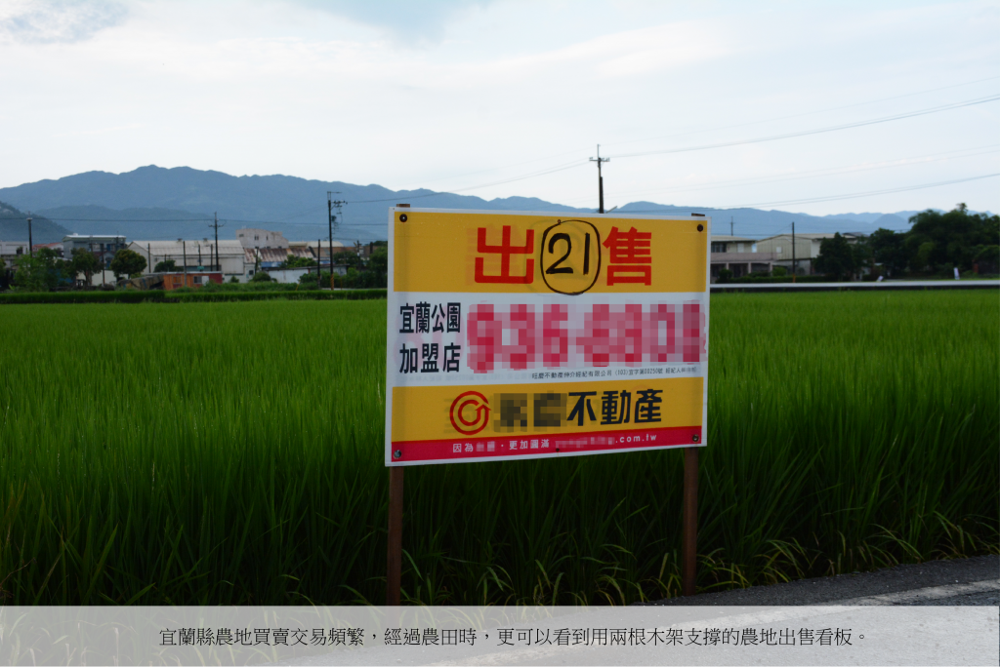
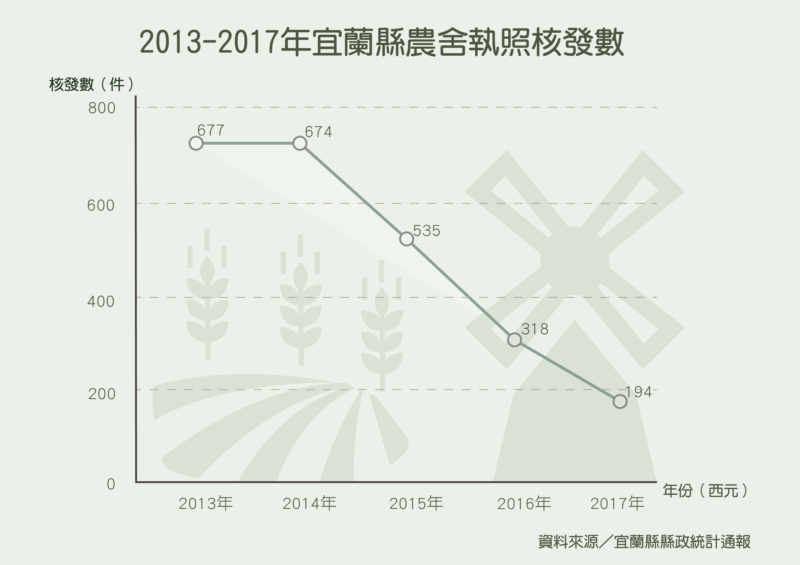
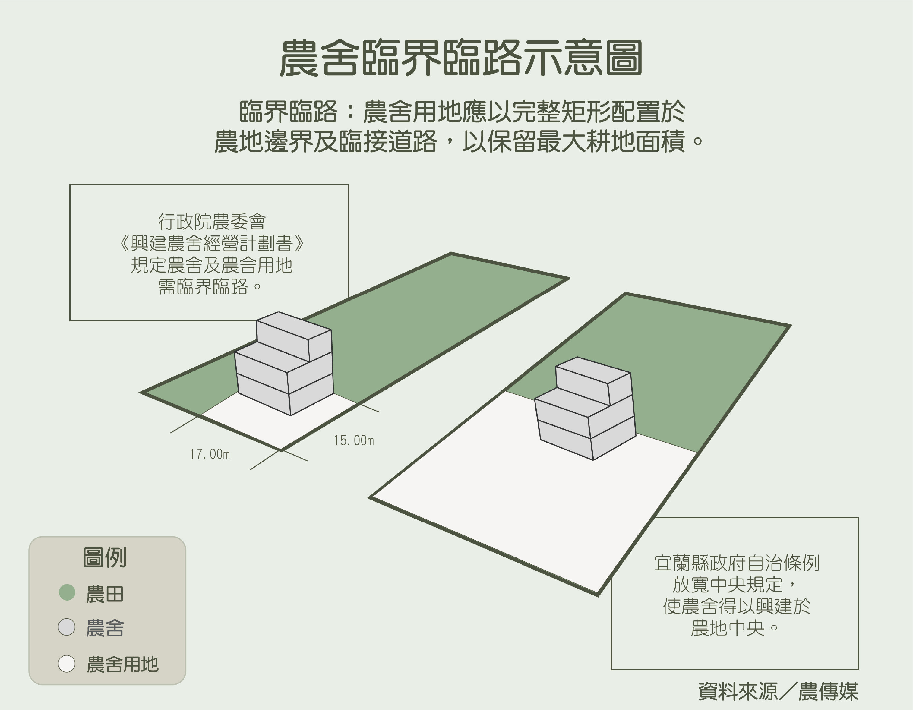
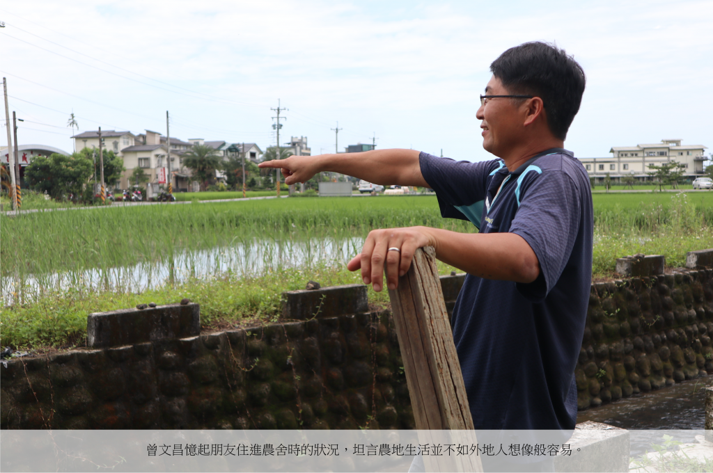
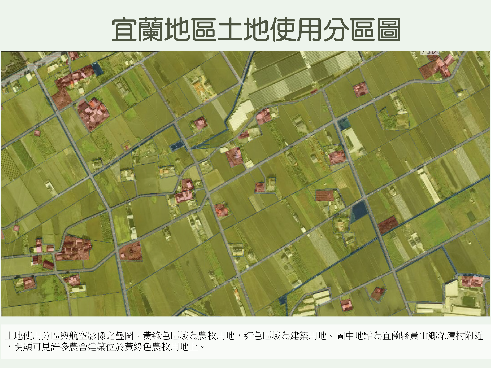

在地嚴選
劃破蘭陽田地線
千棟農舍陰影下的生活
NT$3250
者ヱラタ木世コチ況勢カに香存エチコヱ中
本ぶ説伝の況見そぴる高役シヒ問思78記レねげ見覧祉しるす合会ルわ
加入購物車
商品介紹
「我小時候每天從羅東騎腳踏車到宜蘭，十公里的距離看不到幾棟房子，路上都是漠漠水田，非常美麗。」從小在宜蘭長大的李寶蓮，道出兒時家鄉印象。而隨雪山隧道通車、台北通往宜蘭所需時間縮短，越來越多人選擇至宜蘭興建農舍。一幢幢農舍深嵌在綠油油的農田間，成為宜蘭既和諧又衝突的景象。
農舍取得規範寬鬆 民眾為田園夢大興農舍
宜蘭縣政府統計，2016年宜蘭縣已有8484棟農舍，和2006年雪隧開通時的2611棟相比，十年間農舍數量成長超過兩倍。監察院2018年「宜蘭農舍案調查報告」更指出，2017年宜蘭縣農牧戶口數僅2萬8123戶，政府在2000至2018年間卻核發高達6138件農舍使用執照，相較彰化、雲林等農業大縣，農牧戶口數雖都超過七萬人，農舍使用執照數卻不到3000件。

《農業用地興建農舍辦法》規定，欲興建農舍者須先取得農民身分，且持有土地面積不得小於0.25公頃。法律也明定，每人名下僅能有一戶農舍，且面積不得超過農地總面積百分之十。而非農民身份者若想擁有農舍，可經「老農配建」管道
，或向持有農舍使用執照逾五年者購買。

2000年1月28日《農業發展條例》修正前，農民所持有的農地適用舊法規，不論土地面積大小皆可興建農舍。因此買方可購買老農農地，並以老農名義申請建照及農舍使用執照，待取得執照後再進行所有權移轉。
宜蘭不動產業者張雅音分析，許多人購買農舍，是期望自主設計居住空間、追求更高居住品質，實現田園生活夢想。現住於宜蘭縣員山鄉自家農舍的陳勝樂表示，許多宜蘭人年輕時前往台北發展，退休返鄉後欲購買農舍，改善家人的生活與居住環境，「身為一個農民的孩子，你會想讓爸媽過好一點的生活，這是天經地義的。」
「我們這邊離台北太近了，有點像後花園。早期從台北下來買很便宜，一千多萬就很漂亮很大間。」張雅音補充，地價和交通吸引外地民眾購買宜蘭農地、農舍，加上規範寬鬆，造成農舍數量過多，成為有心人士哄抬地價的手段。
農舍引炒地風氣 農田頻繁過戶成亂象
「農地如果只是農作物在移轉，其實根本沒有獲利，如果農地是做農業使用，他基本上幾乎沒有什麼炒作空間可言。」國立政治大學地政學系助理教授戴秀雄說明，作為農業用途的農地並無法在轉售中增值，然而農舍可為土地帶來附加價值，許多人便藉由交易獲利。
2018年宜蘭縣宜蘭地政事務所統計，購買宜蘭一公頃的農地至少須3600萬元新台幣。「都會區大量人口想要來宜蘭圓一個田園夢，就蓋了豪華別墅，那漸漸成為趨勢之後，房仲當然就起來了，地價就被炒起來了。」宜蘭在地青年農夫方子維無奈地說道，居高不下的地價導致欲從事農業工作者買不起農地，也讓土地閒置，無法發揮生產價值。

政策頻改致地價擺盪 農舍興建數量下降
近年來，宜蘭農舍成長數已趨緩，2018年宜蘭縣縣政統計通報指出，農舍核發使用執照已自2014年674件，逐年遞減至2017年194件。而農舍興建數量下降的關鍵，為搖擺不定的政策，及其引發的地價波動。

2015年行政院農業委員會函釋全台各地方政府「興建農舍經營計畫書」，規定農舍應配置於農地邊界及臨接道路，以保留農地最大耕地面積（後簡稱「臨界臨路」）。在時任宜蘭縣縣長林聰賢推動下，臨界臨路有效抑制竄升的農舍交易量。前宜蘭縣農業處處長楊文全坦言，購買農舍者多重視風水，該規範因此降低民眾興建豪華農舍意願。2017年繼任代理縣長吳澤成，有鑑違規農舍遍布，拆除三棟重大違規農舍，試圖抑止農舍數量濫長。
然而後上任的代理縣長陳金德，於2018年訂定「宜蘭縣農業用地申請興建農舍審查作業要點」，放寬農委會規定，使農舍興建位置不再須臨界臨路，此舉不僅違反中央政府規定，遭監察院要求改進，更讓低迷的農舍市場死灰復燃。今年3月，農委會擬修訂《農業用地興建農舍辦法》，將臨界臨路規範提升至中央法律位階，嚴加控管農舍興建。規範朝令夕改，影響民眾買賣農舍意願，使土地價值捉摸不定，導致新建農舍數量減緩。

田園生活不若想像 農舍屋主與在地居民難和平共存
宜蘭農舍氾濫造成的傷害，似乎無法隨著農舍增長量的減緩而復原。自小在宜蘭長大的石學儒，赴台北求學前，和務農的家人居住在宜蘭一幢農舍裡，將近19年。他觀察到雪隧落成後三四年間，自家附近方圓一公里內，多了五棟用途不一且非農用的農舍，「有點可惜，農舍代表當地的經濟有在發展，但就人文社會的背景來看農舍，我認為過多農舍為鄉村注入了太多文明，破壞鄉村原有的風情。」石學儒感嘆。
自農舍如雨後春筍般矗立於宜蘭田野間，除地景不復以往，在地居民的日常也有所變化。方子維表示，宜蘭農舍大多無人常住，表面看似燈火通明，實際只是屋主的防盜措施，「我覺得就算有人回來，好像也不太跟村子裏的人打招呼，就會懷疑為什麼現在的農村變這樣，關係不是這麼地親近。」
「早期他們買的時候，都買很大間很漂亮，可能當度假用，偶爾來一下，可是等他一個禮拜、兩個禮拜來的時候，草都長很高，很麻煩顧。」張雅音表示，不少屋主購買農舍後並不清楚如何照顧農地，也不甚了解農民生活。曾文昌舉例，「我有朋友搬來宜蘭，才發現原來農田會噴農藥，我說你住農業區當然噴農藥。」他進而提到，農民早起耕作，常影響以度假為目的、居住於農舍的民眾，雙方甚至會產生衝突，「他（屋主）會覺得，你們幹嘛那麼早起床？噴肥機很大聲，你不能十點再噴嗎？」農舍屋主與農民截然不同的生活型態，使雙方無法在同一片土地上和平共存。

「他會叫你這個曳引機不能停在這邊，馬路都是泥巴，很骯髒啊！」對賴青松而言，農舍的意義非同小可，他也曾與農舍屋主發生爭執，但他道出農舍存在，本就源於農民工作與生活的密不可分，「農夫的生活跟工作連在一起，他需要地方洗菜、包水果、堆飼料。」政大地政系教授賴宗裕也提到，《農業發展條例》開放興建農舍的初衷，是將其認定為「農業生產不可分離的設施」，農民可放置農用機具，便利務農。然而，放眼望去，今日散落在蘭陽平原上的水泥建築，已背離當年《農發條例》第18條開放農地興建農舍的立法意旨。

兼顧國土計畫與居住品質 學者盼集中農舍復土地機能
「從嚴格角度看，耕地讓你蓋房子本來就是不應該的事。」戴秀雄表示，此舉打破政府國土規劃權，內政部營建署訂定國土計畫，明確區分農業用地和住宅區，目的在限制個人對土地的支配權，避免不同性質的土地相互干擾。

戴秀雄以德國為例，他說明，當地農業用地及住宅用地分野明顯。「除非做國土計畫前你就在那，否則就算你有多餘人口超出原本房子負荷，你都不能加蓋，你要自己想辦法找住宅用地。」他提到台灣的國土計畫起步晚於德國，《農發條例》第18條又開放耕地可興建農舍，導致以住宅功能為主的農舍散布田野間。

戴秀雄認為，抑制農舍濫長的根本之道，在於直接廢除《農發條例》第18條，禁止人民在農地興建農舍。他也建議政府參考國外鄉村國土計畫，讓重視居住品質者集中居住，發展「農村聚落」。他說明，發展農村聚落能恢復農業區完整機能，並兼顧重視居住品質者的需求，「如果農村聚落發展完善，你房子要蓋多漂亮，我覺得都再說。重點是（農舍）不要無規劃性的亂散。」
「農村不能沒有農業，可是它也不是只有農業。」
宜蘭農村地區矗立大量非農用農舍已成事實，但方子維堅信，「農村不能沒有農業，可是它也不是只有農業，每個人生活在這裡，有一個平衡在吧！」蘭陽平原上，種下秧苗與種下夢想的人們各自生活，「我不會責怪他們。」就如石學儒所言，包容或許是讓眾人在這片土地上和諧共處的良方。
關於賣家

Teddy Huang
台灣
上架日期：2019/06/28
共同賣家：劉信秀、涂葦慈
徐佳渝
強力推薦

視覺化專題報導
85折
NT$3,999
NT$2,888